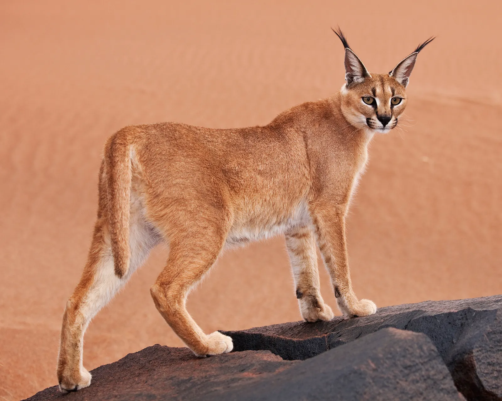
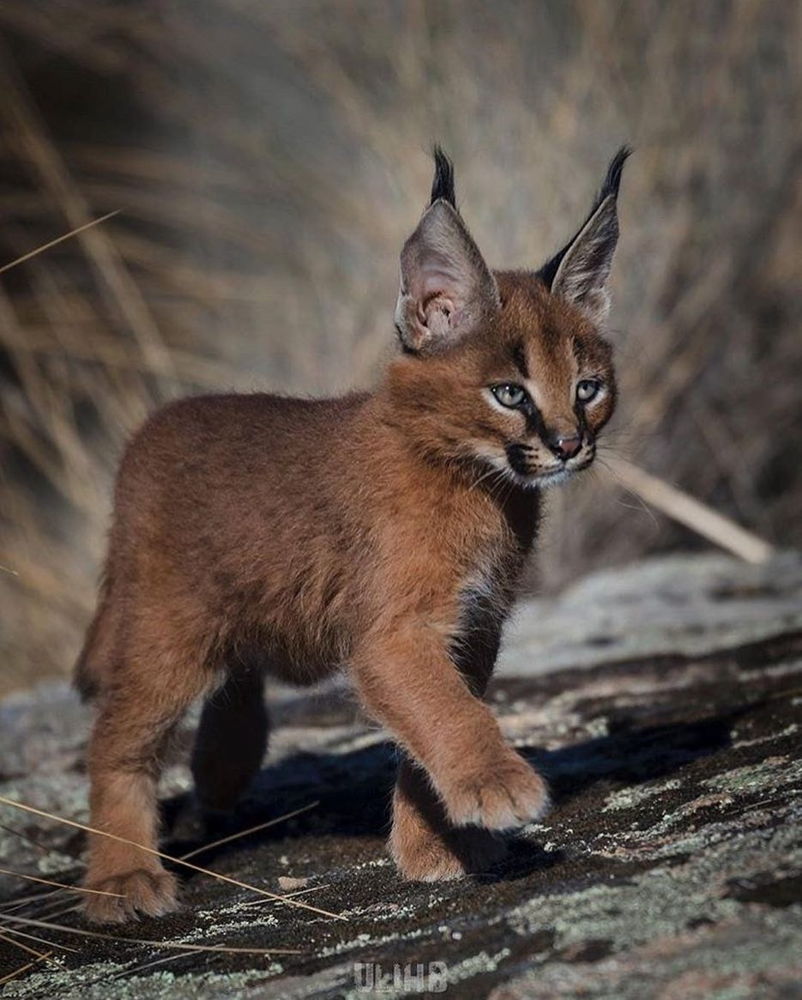

The caracal (Caracal caracal) (/ˈkærəkæl/), is a medium-sized wild
cat native to Africa, the Middle East, Central Asia, and arid areas
of Pakistan and northwestern India. It is characterised by a robust
build, long legs, a short face, long tufted ears, and long canine
teeth. Its coat is uniformly reddish tan or sandy, while the ventral
parts are lighter with small reddish markings. It reaches 40–50 cm
(16–20 in) at the shoulder and weighs 8–19 kg (18–42 lb). It was
first scientifically described by German naturalist Johann Christian
Daniel von Schreber in 1776. Three subspecies are recognised.

Typically nocturnal, the caracal is highly secretive and difficult
to observe. It is territorial, and lives mainly alone or in pairs.
The caracal is a carnivore that typically preys upon small mammals,
birds, and rodents. It can leap higher than 3.0 m (10 ft) and catch
birds in midair. It stalks its prey until it is within 5 m (16 ft)
of it, after which it runs it down and kills its prey with a bite to
the throat or to the back of the neck. Both sexes become sexually
mature by the time they are one year old and breed throughout the
year. Gestation lasts between two and three months, resulting in a
litter of one to six kittens. Juveniles leave their mothers at the
age of nine to ten months, though a few females stay back with their
mothers. The average lifespan of captive caracals is nearly 16
years.

Caracals were tamed in Ancient Egypt and used for coursing in India and Persia.